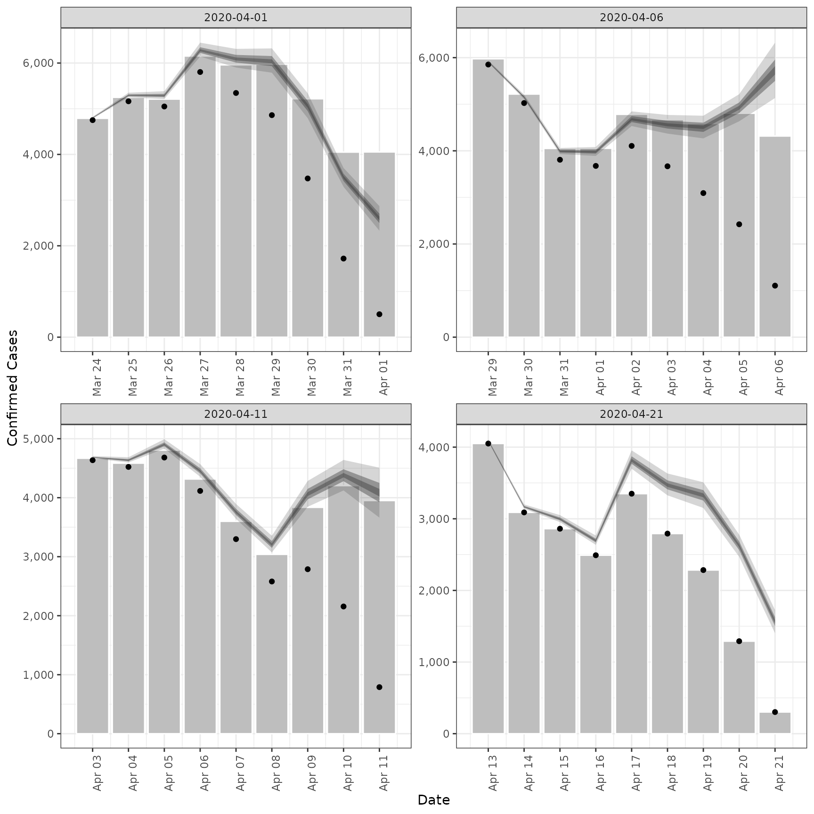

![[Stable]](figures/lifecycle-stable.svg) Estimates a truncation distribution from multiple snapshots of the same
data source over time. This distribution can then be used in
Estimates a truncation distribution from multiple snapshots of the same
data source over time. This distribution can then be used in
regional_epinow, epinow, and estimate_infections to adjust for
truncated data. See
here
for an example of using this approach on Covid-19 data in England. The
functionality offered by this function is now available in a more principled
manner in the epinowcast R package.
The model of truncation is as follows:
The truncation distribution is assumed to be discretised log normal wit a mean and standard deviation that is informed by the data.
The data set with the latest observations is adjusted for truncation using the truncation distribution.
Earlier data sets are recreated by applying the truncation distribution to the adjusted latest observations in the time period of the earlier data set. These data sets are then compared to the earlier observations assuming a negative binomial observation model with an additive noise term to deal with zero observations.
This model is then fit using stan with standard normal, or half normal,
prior for the mean, standard deviation, 1 over the square root of the
overdispersion and additive noise term.
This approach assumes that:
Current truncation is related to past truncation.
Truncation is a multiplicative scaling of underlying reported cases.
Truncation is log normally distributed.
Arguments
- obs
A list of data frames each containing a date variable and a confirm (integer) variable. Each data set should be a snapshot of the reported data over time. All data sets must contain a complete vector of dates.
- max_truncation
Deprecated; use
trunc_maxinstead.- trunc_max
Integer, defaults to 10. Maximum number of days to include in the truncation distribution.
- trunc_dist
Character, defaults to "lognormal". The parametric distribution to be used for truncation.
- model
A compiled stan model to override the default model. May be useful for package developers or those developing extensions.
- CrIs
Numeric vector of credible intervals to calculate.
- verbose
Logical, should model fitting progress be returned.
- ...
Additional parameters to pass to
rstan::sampling.
Value
A list containing: the summary parameters of the truncation
distribution (dist), the estimated CMF of the truncation distribution
(cmf, can be used to adjusted new data), a data frame containing the
observed truncated data, latest observed data and the adjusted for
truncation observations (obs), a data frame containing the last
observed data (last_obs, useful for plotting and validation), the data
used for fitting (data) and the fit object (fit).
Examples
# set number of cores to use
old_opts <- options()
options(mc.cores = ifelse(interactive(), 4, 1))
# get example case counts
reported_cases <- example_confirmed[1:60]
# define example truncation distribution (note not integer adjusted)
trunc <- list(
mean = convert_to_logmean(3, 2),
mean_sd = 0.1,
sd = convert_to_logsd(3, 2),
sd_sd = 0.1,
max = 10
)
# apply truncation to example data
construct_truncation <- function(index, cases, dist) {
set.seed(index)
cmf <- cumsum(
dlnorm(
1:(dist$max + 1),
rnorm(1, dist$mean, dist$mean_sd),
rnorm(1, dist$sd, dist$sd_sd)
)
)
cmf <- cmf / cmf[dist$max + 1]
cmf <- rev(cmf)[-1]
trunc_cases <- data.table::copy(cases)[1:(.N - index)]
trunc_cases[(.N - length(cmf) + 1):.N, confirm := as.integer(confirm * cmf)]
return(trunc_cases)
}
example_data <- purrr::map(c(20, 15, 10, 0),
construct_truncation,
cases = reported_cases,
dist = trunc
)
# fit model to example data
est <- estimate_truncation(example_data,
verbose = interactive(),
chains = 2, iter = 2000
)
# summary of the distribution
est$dist
#> $mean
#> [1] 0.745
#>
#> $mean_sd
#> [1] 0.05
#>
#> $sd
#> [1] 0.84
#>
#> $sd_sd
#> [1] 0.059
#>
#> $max
#> [1] 10
#>
# summary of the estimated truncation cmf (can be applied to new data)
print(est$cmf)
#> index mean se_mean sd lower_90 lower_50 lower_20
#> 1: 1 1.0000000 2.302027e-18 1.024132e-16 1.0000000 1.0000000 1.0000000
#> 2: 2 0.9895982 9.176570e-05 2.646600e-03 0.9849291 0.9878976 0.9891746
#> 3: 3 0.9750423 2.006583e-04 5.803188e-03 0.9648830 0.9712562 0.9740222
#> 4: 4 0.9541988 3.274644e-04 9.508543e-03 0.9376125 0.9479575 0.9524403
#> 5: 5 0.9235566 4.694685e-04 1.370829e-02 0.9003607 0.9144667 0.9208286
#> 6: 6 0.8771449 6.153048e-04 1.810567e-02 0.8469418 0.8650258 0.8730685
#> 7: 7 0.8044811 7.355327e-04 2.183086e-02 0.7688298 0.7898142 0.7990584
#> 8: 8 0.6868409 7.591644e-04 2.282052e-02 0.6506437 0.6716882 0.6807440
#> 9: 9 0.4925611 5.559438e-04 1.772973e-02 0.4646008 0.4810018 0.4878088
#> 10: 10 0.1937785 2.699410e-04 1.217999e-02 0.1749467 0.1856016 0.1901209
#> median upper_20 upper_50 upper_90
#> 1: 1.0000000 1.0000000 1.0000000 1.0000000
#> 2: 0.9898493 0.9904653 0.9913890 0.9935133
#> 3: 0.9755325 0.9768890 0.9789957 0.9837274
#> 4: 0.9548782 0.9571258 0.9606731 0.9686553
#> 5: 0.9241927 0.9276313 0.9327822 0.9448137
#> 6: 0.8775828 0.8823825 0.8892456 0.9055914
#> 7: 0.8046830 0.8104275 0.8190252 0.8394890
#> 8: 0.6864749 0.6920434 0.7018776 0.7247355
#> 9: 0.4921454 0.4961947 0.5036332 0.5228642
#> 10: 0.1931644 0.1962036 0.2010258 0.2154464
# observations linked to truncation adjusted estimates
print(est$obs)
#> date confirm last_confirm report_date mean se_mean sd lower_90
#> 1: 2020-03-24 4751 4789 2020-04-01 4800 0 12 4782
#> 2: 2020-03-25 5163 5249 2020-04-01 5295 1 31 5248
#> 3: 2020-03-26 5049 5210 2020-04-01 5291 1 52 5212
#> 4: 2020-03-27 5804 6153 2020-04-01 6285 3 93 6143
#> 5: 2020-03-28 5345 5959 2020-04-01 6096 4 126 5902
#> 6: 2020-03-29 4860 5974 2020-04-01 6045 5 164 5789
#> 7: 2020-03-30 3474 5217 2020-04-01 5063 5 168 4793
#> 8: 2020-03-31 1721 4050 2020-04-01 3498 3 125 3291
#> 9: 2020-04-01 502 4053 2020-04-01 2600 3 162 2330
#> 10: 2020-03-29 5852 5974 2020-04-06 5913 0 15 5890
#> 11: 2020-03-30 5025 5217 2020-04-06 5153 1 30 5108
#> 12: 2020-03-31 3808 4050 2020-04-06 3991 1 39 3931
#> 13: 2020-04-01 3676 4053 2020-04-06 3981 2 59 3890
#> 14: 2020-04-02 4105 4782 2020-04-06 4681 3 97 4532
#> 15: 2020-04-03 3668 4668 2020-04-06 4562 4 124 4369
#> 16: 2020-04-04 3093 4585 2020-04-06 4508 5 149 4267
#> 17: 2020-04-05 2423 4805 2020-04-06 4925 5 176 4634
#> 18: 2020-04-06 1106 4316 2020-04-06 5729 7 357 5133
#> 19: 2020-04-03 4636 4668 2020-04-11 4684 0 12 4666
#> 20: 2020-04-04 4522 4585 2020-04-11 4637 0 27 4596
#> 21: 2020-04-05 4681 4805 2020-04-11 4906 1 49 4832
#> 22: 2020-04-06 4115 4316 2020-04-11 4456 2 66 4355
#> 23: 2020-04-07 3298 3599 2020-04-11 3761 2 77 3641
#> 24: 2020-04-08 2580 3039 2020-04-11 3209 2 87 3073
#> 25: 2020-04-09 2788 3836 2020-04-11 4063 4 134 3846
#> 26: 2020-04-10 2156 4204 2020-04-11 4382 4 157 4123
#> 27: 2020-04-11 789 3951 2020-04-11 4087 5 254 3662
#> 28: 2020-04-13 4050 4050 2020-04-21 4092 0 10 4076
#> 29: 2020-04-14 3089 3089 2020-04-21 3168 0 18 3140
#> 30: 2020-04-15 2861 2861 2020-04-21 2998 1 29 2953
#> 31: 2020-04-16 2491 2491 2020-04-21 2697 1 40 2636
#> 32: 2020-04-17 3350 3350 2020-04-21 3820 2 79 3699
#> 33: 2020-04-18 2793 2793 2020-04-21 3474 3 94 3327
#> 34: 2020-04-19 2284 2284 2020-04-21 3329 3 110 3151
#> 35: 2020-04-20 1291 1291 2020-04-21 2624 2 94 2469
#> 36: 2020-04-21 302 302 2020-04-21 1564 2 97 1401
#> date confirm last_confirm report_date mean se_mean sd lower_90
#> lower_50 lower_20 median upper_20 upper_50 upper_90
#> 1: 4792 4796 4799 4802 4809 4823
#> 2: 5273 5285 5292 5300 5315 5350
#> 3: 5255 5275 5287 5301 5326 5384
#> 4: 6222 6256 6280 6303 6346 6446
#> 5: 6010 6057 6090 6122 6179 6310
#> 6: 5933 5996 6039 6082 6153 6321
#> 7: 4949 5019 5060 5103 5172 5339
#> 8: 3417 3468 3496 3528 3577 3704
#> 9: 2497 2558 2598 2640 2704 2869
#> 10: 5902 5908 5912 5916 5923 5941
#> 11: 5132 5143 5151 5159 5173 5207
#> 12: 3963 3978 3987 3998 4017 4061
#> 13: 3940 3962 3977 3992 4019 4082
#> 14: 4616 4652 4677 4701 4745 4846
#> 15: 4478 4526 4558 4590 4644 4770
#> 16: 4406 4469 4505 4543 4604 4753
#> 17: 4811 4883 4923 4967 5037 5215
#> 18: 5501 5637 5725 5817 5959 6321
#> 19: 4676 4680 4683 4686 4692 4706
#> 20: 4619 4628 4635 4642 4655 4686
#> 21: 4872 4890 4902 4914 4937 4992
#> 22: 4411 4436 4452 4468 4499 4570
#> 23: 3708 3737 3758 3777 3812 3894
#> 24: 3150 3183 3206 3228 3266 3355
#> 25: 3972 4028 4061 4095 4150 4284
#> 26: 4280 4345 4380 4419 4482 4640
#> 27: 3924 4021 4084 4149 4251 4509
#> 28: 4085 4088 4091 4094 4099 4111
#> 29: 3155 3162 3166 3171 3180 3201
#> 30: 2978 2989 2996 3003 3018 3051
#> 31: 2670 2685 2695 2705 2723 2766
#> 32: 3767 3796 3817 3837 3872 3955
#> 33: 3410 3446 3470 3495 3536 3632
#> 34: 3254 3300 3327 3355 3400 3510
#> 35: 2563 2601 2623 2646 2683 2778
#> 36: 1502 1539 1563 1588 1627 1726
#> lower_50 lower_20 median upper_20 upper_50 upper_90
# validation plot of observations vs estimates
plot(est)

options(old_opts)